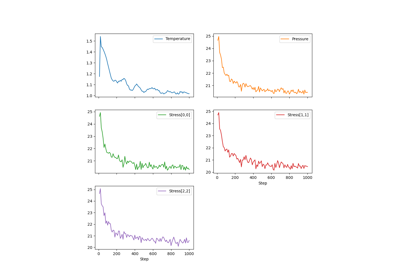
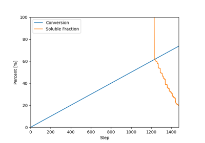

Examples¶
The following gallery contains example scripts demonstrating the usage of various features in pylimer-tools. Each script is designed to illustrate a specific functionality or analysis method available in the library.
Please be aware that the system sizes and simulation trajectory times are not representative of real-world applications. These examples are primarily for educational purposes and to showcase the capabilities and usage of pylimer-tools.
Running the Examples¶
To run the examples, you can execute the scripts directly in your Python environment. Make sure you have pylimer-tools installed and the necessary dependencies are met. Some examples require specific input files, such as LAMMPS data or output files. All these files are part of the pylimer-tools test suite. You can either download them from the GitHub repository, where you find them in in the folder tests/pylimer_tools/fixtures, in which case you will have to adjust the file paths in the examples accordingly, or you can clone the entire repository and switch to the directory of the example script you want to run. Then, run the script directly from there.
Dissipative Particle Dynamics (DPD) Simulations¶
pylimer-tools provides a powerful framework for simulating coarse-grained polymer systems using Dissipative Particle Dynamics (DPD) with slip-springs. This allows for realistic modeling of polymer behavior at a mesoscopic scale. The implementation is based on Langeloth et al. [LMBohmMullerPlathe13], Schneider et al. [SFKarimiVarzanehMullerPlathe21] and Schneider and De Pablo [SDP23].
Refer to the full documentation of the DPD simulator in the DPDSimulator class for more details.

Dissipative Particle Dynamics (DPD) Simulations
Force Balance, Maximum Entropy Homogenization Procedures¶
pylimer-tools provides three implementations of the Force Balance:cite:p:bernhard_phantom_2025, Maximum Entropy Homogenization Procedure (MEHP):cite:p:gusev_numerical_2019 to reduce polymer networks to their minimum energy, maximum entropy homogenized state. This is useful for predicting the (phantom) equilibrium shear modulus of the network.
Here, we distinguish the following three different implementations:
MEHPForceRelaxation: An MEHP implementation that allows to use non-linear force potentials,MEHPForceBalance: A Force Balance implementation, which uses just Hookean springs, but allows the use of slip-links to model entanglements,MEHPForceBalance2: The faster implementation of the Force Balance procedure, without allowing for slip-links, but allowing the modelling of entanglements as static links, like tetrafunctional crosslinks.


Network Generation¶
pylimer-tools includes a powerful Monte Carlo-based network generator for creating realistic polymer systems.
This tools is particularly useful for generating quick initial configurations for molecular dynamics simulations,
or for doing fast predictions of the viscoelasticity using the NormalModeAnalyzer or the
pylimer_tools_cpp.MEHPForceBalance and its variants.
For more options, examples and advanced usage, see the test suite
and the modules API reference, particularly of the MCUniverseGenerator class.
The network generation system allows you to:
Create end-linked and vulcanized polymer networks with controllable topology
Generate solvent chains and background molecules
Control crosslinking degree and functionality
Set realistic bead distances and box sizes
The MCUniverseGenerator class is the main interface for network generation.
The initial method was introduced in Gusev [Gus19],
the current implementation is more powerful, as needed for Bernhard and Gusev [BG25].



Custom Crosslinking with Callback Functions
Normal Mode Analysis¶
pylimer-tools provides a normal mode analysis (NMA) implementation to predict the loss and storage modulus of polymer networks
as published in Gusev and Bernhard [GB24].
This is useful for understanding the viscoelastic properties of the network.
The corresponding class is NormalModeAnalyzer.
File I/O: Readers & Writers¶
pylimer-tools provides comprehensive support for reading and writing various LAMMPS file formats, enabling seamless integration with molecular dynamics workflows.
The library supports four main file I/O operations:
Reading LAMMPS data files - Complete system configurations
Reading LAMMPS dump files - Trajectory and snapshot data
Reading LAMMPS output files - Measurements and simulation results
Writing LAMMPS data files - Modified or generated systems


Structure Analysis¶
pylimer-tools offers various tools to manipulate and analyze the topology of polymer networks.
Here you can find examples of some of the functionality provided by the package.
Decomposing Crosslinked Networks to Chains¶
There are a number of ways how a given Universe can be decomposed.
The most common use case is to decompose a crosslinked network into its constituent chains, which can then be used for further analysis or processing.
To find the chains, there are two main approaches:
- Removing the crosslinkers and analysing the remaining polymer strands using get_molecules()
- Decomposing the network to chains, but keeping the crosslinkers in place, possibly being repeated in all the chains it is associated with. This decomposition can be done using the get_chains_with_crosslinker() method.
pylimer-tools provides two more advanced methods for decomposing networks:
- If you removed the junctions yourself, you can use get_clusters()
If you want even more control, you could assemble your own decomposition algorithm using the Universe class and its methods, such as get_atoms_connected_to().
Finding Loops¶
You can also find loops in the network using the find_loops() method.
If you want to count the number of loops present in the network, as a function of their length, you can use the count_loop_lengths() method.
Finally, to find the shortest loop a specific atom is involved in, you can use the find_minimal_order_loop_from() method.
Caution
There are exponentially many paths between two crosslinkers of a network, and you may run out of memory when using these functions, if your network is lattice-like.
Trajectory Analysis¶
pylimer-tools provides advanced tools for analyzing molecular dynamics trajectories, particularly for polymer systems. This includes reading trajectory data and computing various properties.
For more information, refer to the documentation of the UniverseSequence class and the Universe class for a list of methods available for property computations.